Dům, který se prodává jako rozestavěná restaurace. A přitom je to dům pět minut pěšky od Máchova jezera.
Ahoj, podívali jsme se na inzerát vašeho domu v Dalibora z Myšlína 33, proč se zatím neprodal a jak bychom ho ukázali my. Prodej zůstává u Gepard Reality, my bychom jen dodali obsah a kampaň. Ceny za naši práci tu zatím nejsou, nejdřív si řekneme, jestli vám návrh sedí.
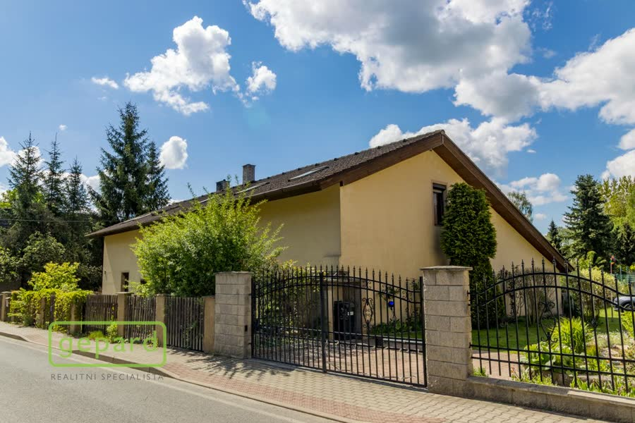
1 558 m²pozemek se zahradou a altánem
330 m²užitná plocha, 2 podlaží + sklep
5 minpěšky na břeh Máchova jezera
7,4 mil. Kčna Sreality od 29. 1. 2026, na začátku 8,69 mil.
Co dnes vidí kupec
15 fotek, z toho 5 hrubé stavby a sklepa. Jezero ani jednou.
Takhle jdou fotky v inzerátu za sebou. Zelený rámeček je dům a zahrada, oranžový sklep a nedokončené podkroví. Podle dat ve fotkách jsou interiéry z 28. 1. a exteriéry až ze 17. 5. 2026. Inzerát tak první měsíce nejspíš běžel bez fotky domu zvenku.
ulice
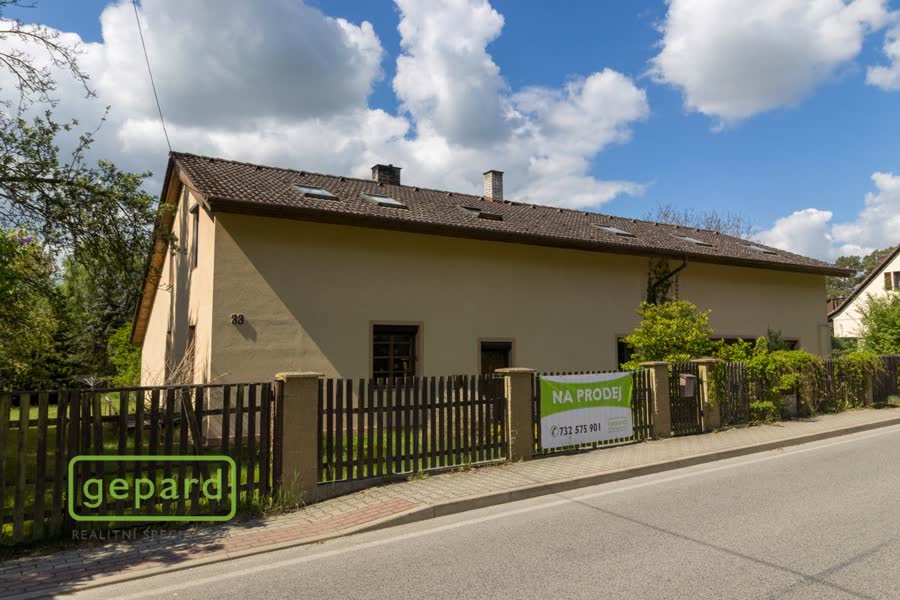
ulicezahrada
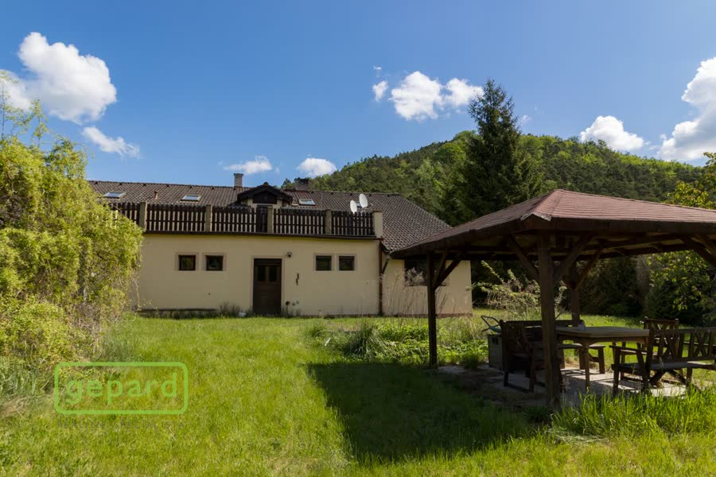
zahrada
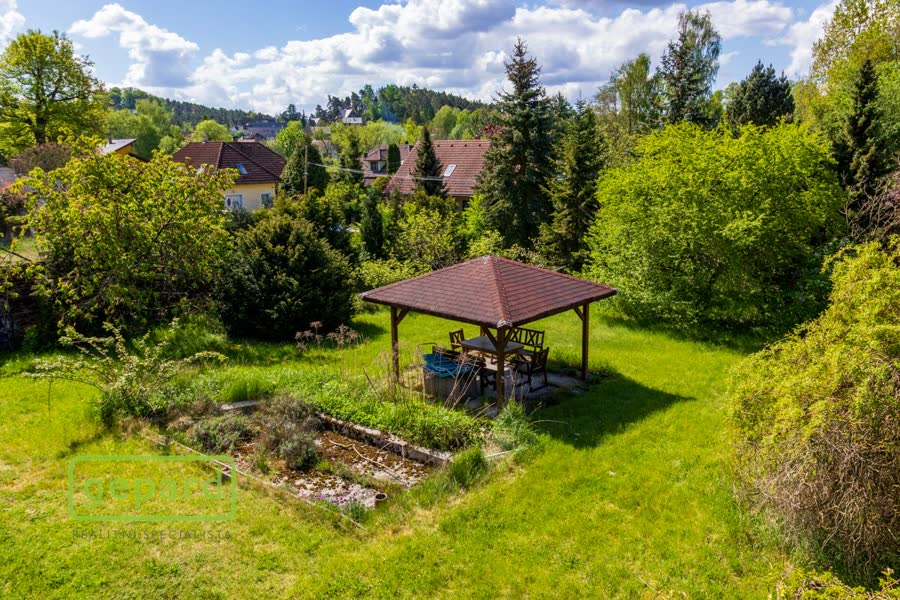
altánpokojpokoj
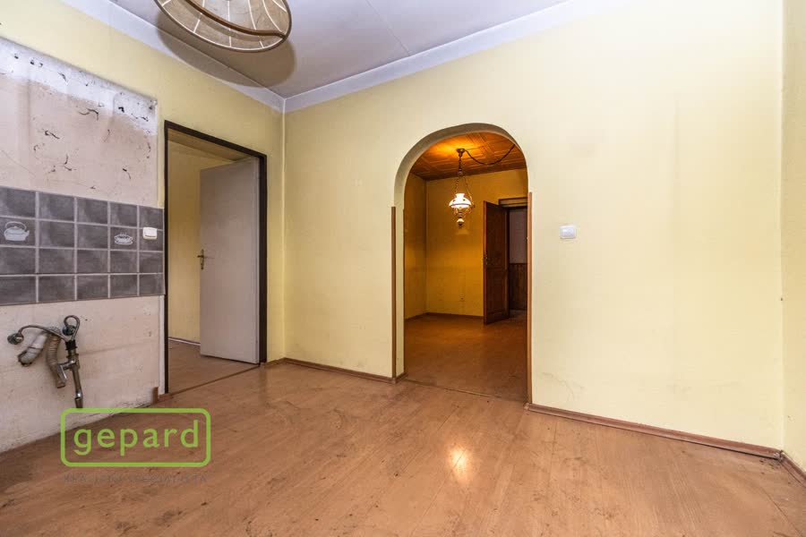
kuchyňkoupelnakoupelna
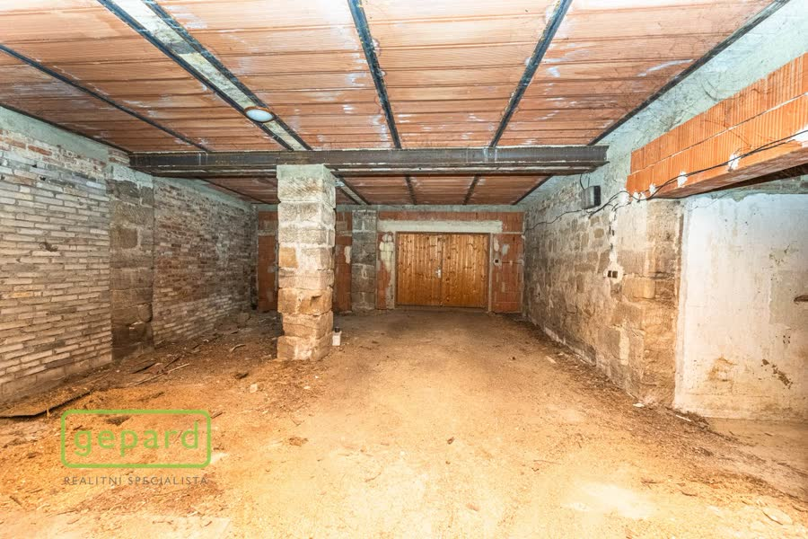
sklep
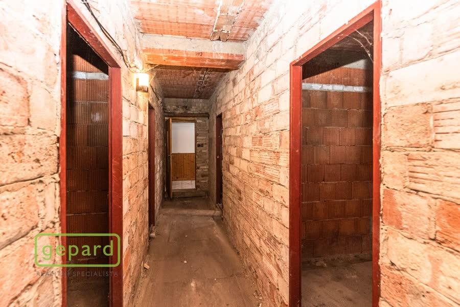
chodbapodkroví
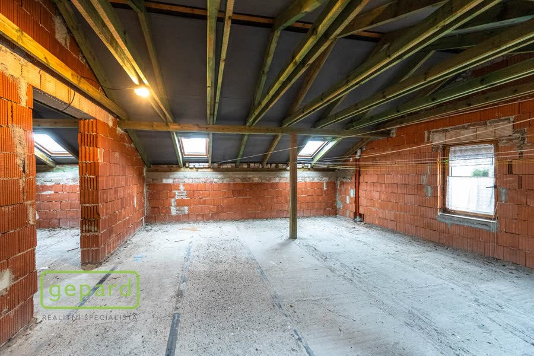
podkrovípodkroví
dům a zahrada: 5pokoje, kuchyň, koupelny: 5hrubá stavba a sklep: 5jezero, pláž, okolí: 0dron, video, vizualizace, půdorys: 0
7
Proč se to neprodává
7 důvodů, proč se dům zatím neprodal
Inzerát má na Sreality přes 12 500 zobrazení. Lidi ho otevírají, ale nedozví se, proč by tu měli bydlet ani co by z domu udělali.
1
2× na Sreality, pokaždé jinde
Titulek prodává problém
„Nedokončená plánovaná přestavba domu na 3 byty s restaurací“. Rodina čte „rozestavěné“, ten, kdo hledá pronájem, neví, co kupuje. Na Sreality visí jednou jako rodinný dům a jednou jako ubytovací zařízení, se stejným textem.
UdělámeDva inzeráty se dvěma příběhy. Pro rodinu „Dům se zahradou 1 558 m², 5 minut pěšky od Máchova jezera“. Pro pronájem „Dům u Máchova jezera: celý k pronájmu, nebo 3 apartmány“.
2
0 z 15 fotek ukazuje okolí
Chybí dron, lokalita není vidět
Břeh Máchova jezera je pět minut pěšky, vlak dvanáct. To je hlavní důvod, proč by tu někdo chtěl bydlet nebo pronajímat. V inzerátu je o tom jedna věta na konci popisu. Žádný záběr shora, žádná fotka jezera, žádná vzdálenost.
UdělámeZáběry z dronu Doks a Máchova jezera už máme vlastní (květen 2026, ukázky níž). Z nich video lokality, 3D mapa s minutami k jezeru a k vlaku a první fotky inzerátu z okolí.
3
0 videí · dokouká je až 75 % lidí
Chybí video
Podle Sreality (blog Seznamu, 25. 4. 2023) dokouká videoprohlídku až 75 % zájemců a má ji jen asi 10 % inzerátů. U domu, kde rozhoduje okolí a zahrada, je to škoda dvakrát.
UdělámeDvě krátká videa bez natáčení: lokalita z našich záběrů a dům z rozhýbaných fotek, obojí s voiceoverem.
4
0 vizualizací
Chybí vizualizace, kupec vidí jen cihly
Poslední tři fotky jsou holé cihly v podkroví a betonová podlaha. Kupec si z toho hotový pokoj ani apartmán nepředstaví a v hlavě mu zůstane „hodně práce“.
UdělámeDvě až tři vizualizace ze stejného úhlu jako fotky: hotové podkroví, apartmán, zahrada. Fotka a vedle ní „takhle to může vypadat“.
5
0 výkresů v inzerátu
Projekt existuje, kupec ho nevidí
K domu je projekt přestavby na penzion se stavebním povolením a podkroví v něm má dva byty 3+1 (podrobně níž). V inzerátu z toho není nic. Z fotek navíc nepoznáte, že se v přízemí i v podkroví dá bydlet hned.
UdělámeČistý půdorys podkroví podle projektu a zakreslené přízemí. Barevně odlišíme, co je hotové a co se dokončuje.
6
G mimořádně nehospodárná
PENB G bez vysvětlení
Třída G straší, i když dům má plynový kotel, okna z 90. let a dvoje kamna na dřevo. Kupec si domyslí horší variantu.
UdělámeJedna věta a obrázek: co je nové, co se počítá do dokončení (zateplení podkroví, okna) a skutečné roční náklady na topení.
7
−1,29 mil. bez nového obsahu
Sleva místo nové nabídky
Start 8,69 mil., teď 7,4 mil. a půjde níž. Každé snížení se stejnými fotkami vypadá jako „s domem je něco špatně“. Kupci sledují slevy a čekají na další.
UdělámeNová cena půjde ven ve stejný den jako nové fotky, video a titulek. Jako nová nabídka, ne jako další sleva.
Pro srovnání: domy v okolí na Sreality (12. 11. 2026)
Kde
Dům
Pozemek
Cena
Staré Splavy (váš)
330 m²
1 558 m²
7,4 mil.
Provodín
297 m²
2 452 m²
6,5 mil.
Doksy, Husova
250 m²
1 249 m²
6,7 mil.
Doksy, Valdštejnská
165 m²
662 m²
7,0 mil.
Doksy, Zbyny
611 m² (vícegenerační)
679 m²
8,9 mil.
Doksy
412 m²
1 060 m²
11,0 mil.
Doksy, Žďár
240 m²
3 900 m²
11,5 mil.
Nabídkové ceny, ne prodejní. Stav domů se liší, slouží jen pro orientaci.
Podklady od Geparda · 13. 11. 2026
Projekt přestavby existuje: penzion s restaurací a dva byty v podkroví
Jakub poslal původní projekt: technickou zprávu, řez, situaci a půdorys podkroví. Pro prodej je to důležitější, než to vypadá. Kupec, který chce dům pronajímat, nemusí začínat od nuly.
PenzionProjekt řeší přestavbu rodinného domu na penzion. V přízemí restaurace pro 23 hostů s kuchyní, v podkroví ubytování pro 12 hostů v sezóně.
Stavební povoleníNa řezu je razítko Městského úřadu v Doksech. Datum je nečitelné, nejspíš 90. léta. Jestli platí, ověříme na úřadě.
+166 m² přístavbaSituace počítá s přístavbou za domem, terasou 45 m² a 6 parkovacími místy na pozemku.
Schéma podle projektového půdorysu, rozměry místností přibližné, plochy z legendy projektu. Kolik z toho je dnes hotové, doplníme podle prohlídky. Podle inzerátu je v podkroví hotová část se 2 pokoji, kuchyní, koupelnou a terasou.
Přízemí je dnes obyvatelné (3 pokoje, kuchyň, koupelna) a vedle něj jsou rozestavěné prostory restaurace. Výkres k nim není. Stačí ruční náčrt s rozměry, nebo přízemí zaměříme sami při jedné návštěvě a nakreslíme čistě.
Lokalita, kterou inzerát neukazuje
✓ Záběry z dronu už máme
Máchovo jezero máme natočené z dronu. Lokalitu nemusíme točit znovu.
Naše vlastní záběry z Doks a Máchova jezera z 5. 5. 2026: jezero, přístav, pláže, Bezděz. Z nich postavíme video lokality i úvodní fotky inzerátu.
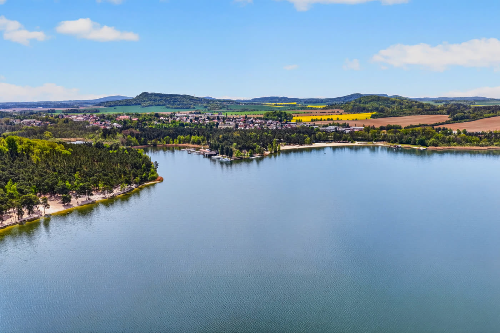
Máchovo jezero
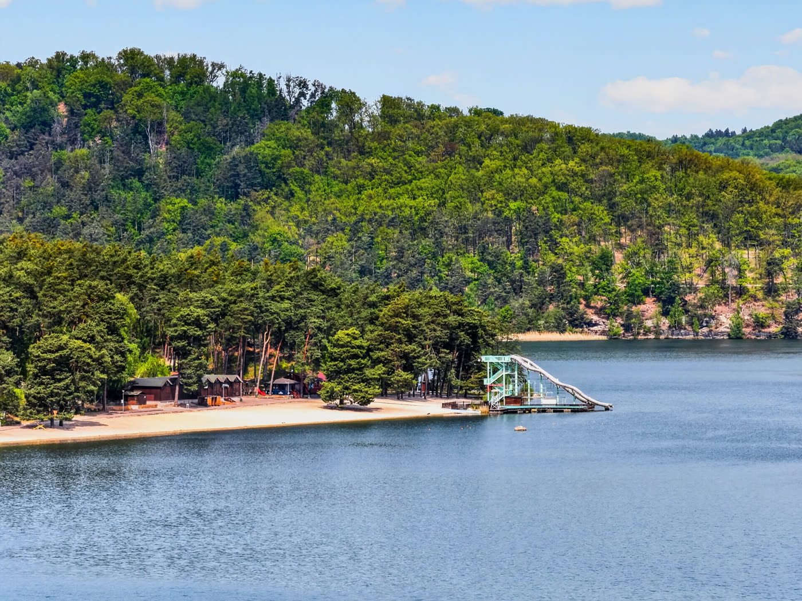
pláž s molem
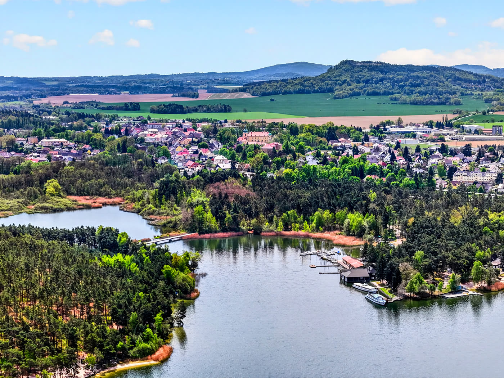
přístav
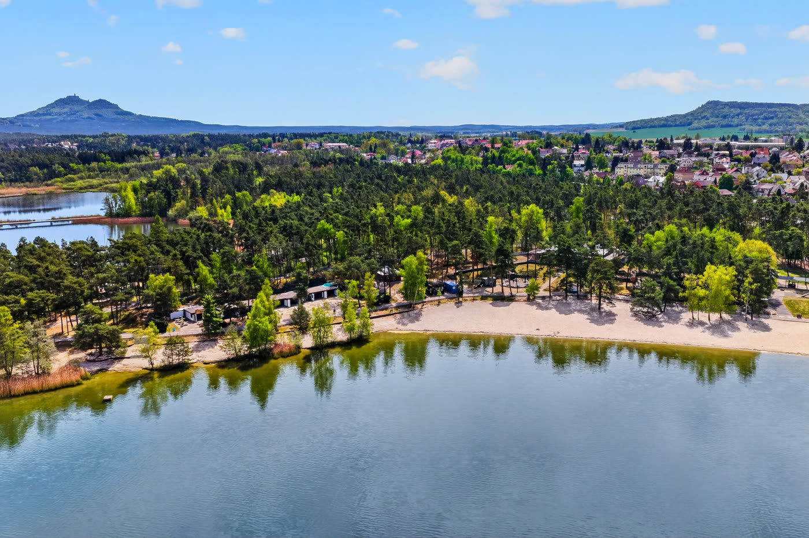
pláž a les
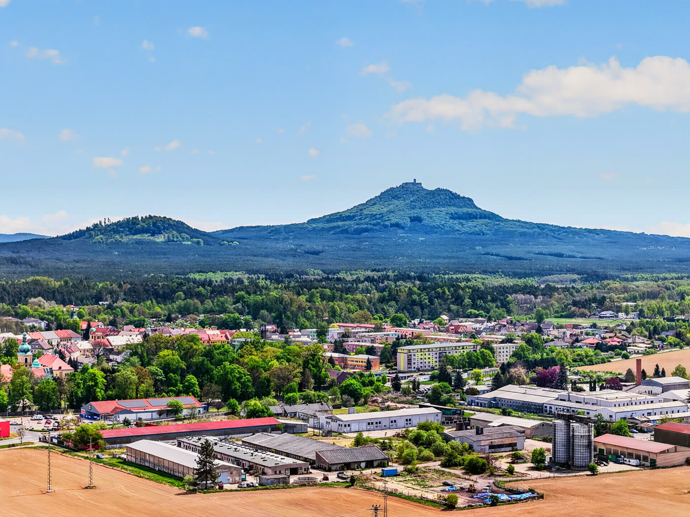
Bezděz
Pět minut k vodě, dvanáct na vlak
Hospůdka Pod lipou60 m
břeh Máchova jezera370 m · 5 min
vlak, zastávka Staré Splavy900 m · 12 min
pláž Staré Splavy1,5 km · 20 min
pláž v Doksech2,9 km · 40 min
pláž Borný3 km · 40 min
Trasy pěšky po cestách z polohy domu v inzerátu, podle OpenStreetMap 12. 11. 2026. Před zveřejněním je projdeme na mapě.
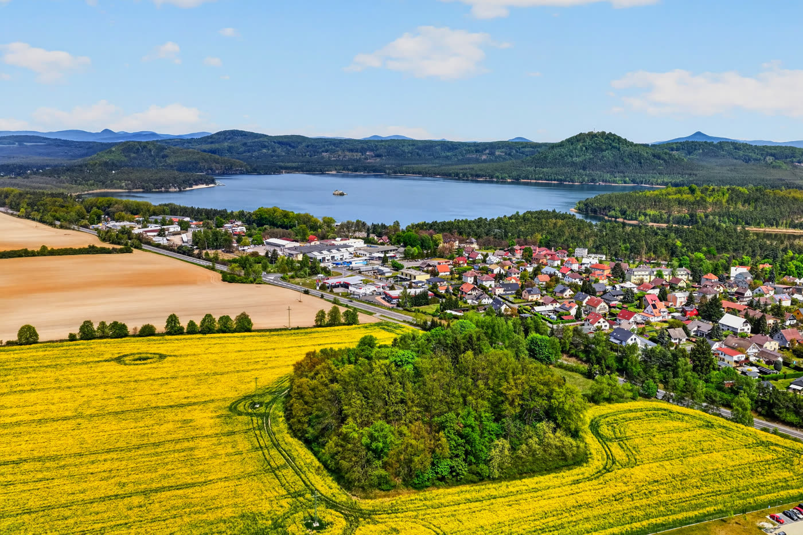
Takový záběr by v inzerátu stál na prvním místě: jezero, městečko a krajina na jedné fotce.
Kdo to koupí
Dvě skupiny, dvě různé zprávy
Jeden inzerát pro všechny dnes neosloví nikoho naplno. Rozdělili bychom to a každé skupině ukázali jinou reklamu. Vpravo je, jak by vypadala ve zdi na Facebooku a Instagramu.
Skupina A · rodina
„Chceme dům se zahradou a jezero za humny“
Rodina z Prahy, Mladé Boleslavi nebo Liberce, která chce bydlet trvale nebo tu mít druhý domov. Kupuje velký pozemek, klid a okolí za cenu menšího bytu v Praze.
Musí vidět: zahradu, altán, jezero, pláž, cestu na vlak, kde bude obývák a dětské pokoje.
Bojí se: rozestavěnosti a nákladů na dokončení. Odpověď: bydlet se dá hned (v přízemí 3 pokoje s kuchyní, v podkroví 2 pokoje s kuchyní a terasou), zbytek se dokončí postupně.
Kde je najdeme: Sreality a reklama na Facebooku a Instagramu, rodiny 30–50 let v okruhu Praha, Mladá Boleslav, Liberec, Česká Lípa.
MJ
Dům u Máchova jezera
Sponzorováno
Zahrada 1 558 m², altán a ovocné stromy. Na břeh Máchova jezera dojdete za pět minut, na vlak za dvanáct. Bydlet se dá hned. 🌲🏡
gpre.czDům se zahradou u Máchova jezera
Domluvit prohlídku
Ukázka · reklama ve zdi 4:5
Skupina B · koupě na pronájem
„Hledám dům u vody, který budu pronajímat“
Kolem Máchova jezera se v létě shání ubytování. Dům se dá využít dvěma způsoby:
B1 · celý důmPronájem velké skupině: rodiny, přátelé, firemní akce. Hlavně sezóna, mimo ni cyklisté, Bezděz, Kokořínsko. Méně práce, jeden host.
B2 · apartmány nebo penzionPůvodní projekt počítá s penzionem: restaurace v přízemí, v podkroví dva byty 3+1 pro 12 hostů. Pronajímat zvlášť, nebo dokončit podle projektu.
Musí vidět: projekt penzionu, půdorys podkroví, stav povolení, sezónu a vzdálenosti k plážím.
Kde je najdeme: Sreality v kategorii ubytování a reklama na lidi, které zajímá pronájem a ubytování u vody.
MJ
Dům u Máchova jezera
Sponzorováno
Celý dům k pronájmu, nebo tři apartmány? 330 m² a zahrada 1 558 m² pět minut od Máchova jezera. V inzerátu najdete půdorys obou variant.
gpre.czDům u jezera: celý, nebo 3 apartmány
Poslat půdorys
Ukázka · reklama ve zdi 4:5
Ukázka kampaně
Tři krátké reklamy na mobil, každá končí jasnou výzvou
Svislé reklamy do Stories a Reels. Nahoře zachytí pozornost, dole řeknou, pro koho to je, a nabídnou jeden krok.
Staré Splavy · Máchovo jezero
Léto u jezera. Celý rok ve vlastním.Je to pro vás, pokud chcete velkou zahradu a vodu za humny.Chci prohlídku
Rodina · bydlení
5 min pěšky k jezeru
Dům pro velkou partu. Zahrada, altán, jezero.Je to pro vás, pokud hledáte dům, který budete celý pronajímat.Poslat podrobnosti
Pronájem celku
Podkroví dnes → vizualizace
Apartmány u Máchova jezera. Projekt penzionu už existuje.Je to pro vás, pokud chcete apartmány pronajímat zvlášť.Poslat půdorys
Apartmány
Pozor na slova v reklamě: nepíšeme „investice“, „investor“ ani „výnos“. Reklama na Facebooku a Instagramu u nemovitostí s tím má potíže a slib výnosu bez čísel působí podezřele. Píšeme, co se s domem dá dělat: „celý k pronájmu“, „tři apartmány“.
Videa
Nejdřív místo, pak dům
Obě videa bez nového natáčení. Video lokality postavíme z našich záběrů z dronu, video domu z rozhýbaných fotek z inzerátu. Přes obojí jde klidný voiceover.
Video 1 · Lokalita, 30–40 s
0–6 smámeDron nad Máchovým jezerem. „Máchovo jezero. Místo, kam lidi jezdí na dovolenou.“
6–14 smámePláž s molem, přístav, lesy, Bezděz.
14–24 suděláme3D mapa: dům, jezero, vlak, minuty pěšky. „Pět minut pěšky k vodě, dvanáct na vlak.“
24–36 sz fotekDolet na ulici a dům. Dron domu nemáme, poskládáme ho z fotek. „Tady můžete bydlet celý rok.“
Video 2 · Dům, 45–60 s
0–8 sz fotekZahrada a altán, pomalý pohyb kamery. „Zahrada přes patnáct set metrů.“
8–24 sz fotekPřízemí a hotová část podkroví: pokoje, kuchyně, koupelny, terasa. „Bydlet se tu dá hned.“
24–40 sz fotekPodkroví dnes, pak prolnutí do vizualizace. „Podkroví a rozestavěná restaurace čekají na vás: rodinné pokoje, nebo tři apartmány.“
40–55 sudělámePůdorys dnes / po dokončení, kontakt na makléře.
?
Máte víc fotek domu? Hlavně z dronu?
Dolet na dům a pohyb po zahradě skládáme jen z 15 fotek v inzerátu. Pokud máte fotku nebo video domu z dronu, zahradu v létě, terasu nebo cestu k jezeru, pošlete je. Každý další úhel znamená přirozenější video. Jinak bychom dům z dronu museli dotočit.
Každé video ve dvou střizích: rodina (bydlení, zahrada, vlak) a pronájem (sezóna, pláže, apartmány). Formáty 16:9 pro inzerát a 9:16 pro reklamu.
Postup
Harmonogram na šest týdnů
Od podkladů po vyhodnocení reklamy. Týden 1 začíná dnem, kdy od vás dostaneme půdorysy a fotky.
Krok
Týden 1
Týden 2
Týden 3
Týden 4
Týden 5
Týden 6
Podklady od váspůdorysy, povolení, fotky, nová cena
vy
Nový inzerát2 titulky, pořadí fotek, lokalita, PENB
texty
fotky
Videa, vizualizace, půdoryslokalita, dům, 3D mapa
střih
VO + viz
Spuštění s novou cenouinzerát, video a cena v jeden den
start
Reklama A + Brodina a pronájem zvlášť
běží
běží
běží
běží
Zpráva o reklaměkaždý týden + úprava reklam
zpráva
zpráva
vyhodnocení
vymymilníkreklama běží
Týdenní zpráva o reklaměukázka · čísla doplníme po spuštění
Kolik lidí reklamu vidělo—
Kolik kliklo na inzerát—
Kolik se ozvalo—
Domluvené prohlídky—
Skupina A · rodina
Která reklama funguje nejlíp, odkud jsou lidé, kolik stojí jeden zájemce.
Skupina B · pronájem
Totéž pro celý dům a apartmány zvlášť. Co nefunguje, vypneme a peníze přesuneme.
Co od vás potřebujeme
Přízemí: ruční náčrt s rozměry, nebo nám dejte vědět, kdy můžeme přijet zaměřit. Podkroví z projektu už máme, díky.
Rozhodnutí o stavebním povolení na penzion: máte ho? A co přesně se kolaudovalo v roce 2000?
Na kolik jde cena dolů a odkdy.
Kolik stojí topení za rok a co by podle vás stálo dokončení podkroví.
Další fotky domu: z dronu (fotka nebo video domu shora), zahrada v létě, terasa, cesta k jezeru.